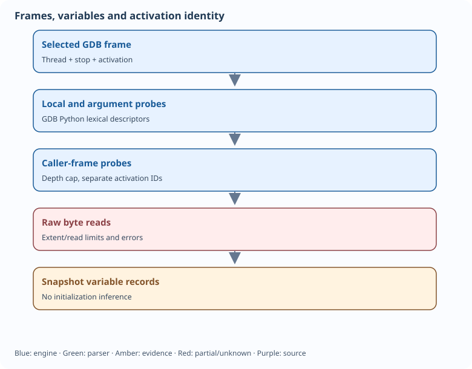
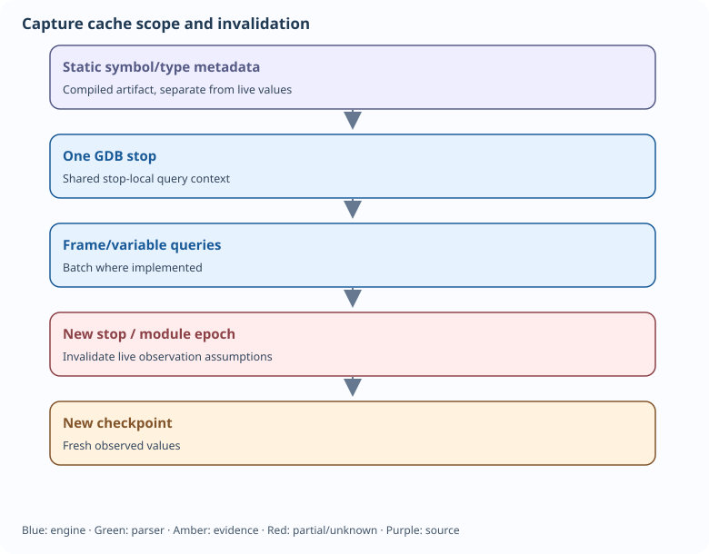

27 · Stack frames, variables, and observed memory #
Key terms #
| Term | Plain meaning |
|---|---|
| Call frame | The debugger's record of one active function call: function name, position, and where it is stopped. |
| Lexical scope | The part of a function's source where a declaration is in scope. Two nested blocks may both declare value. |
>
The big picture #
Stopped-state capture answers a narrow question: at this observed GDB stop, what did the selected frame, selected caller frames, globals and bounded byte reads show? It does not reconstruct an object graph or prove that a source declaration was instantiated. src/gdb_mi.rs owns frame/variable extraction; src/recorder.rs performs byte reads; src/memory.rs qualifies addresses and pointer candidates; src/trace.rs assembles snapshots.
Frames and activation identity #
StackFrameInfo is the serialized frame record produced by gdb_mi::frame_from_tuple and parse_frames (src/gdb_mi.rs:1302-1345). capture_state requests at most 200 frames with -stack-list-frames 0 200, marks whether the chain was truncated, and builds an activation path from oldest to youngest (src/gdb_mi.rs:1864-1910). The selected frame is frame zero. Recursive calls with the same function name receive different activation IDs because the path is positional and compared with the prior path; a truncated chain clears continuity rather than reusing a sliding prefix (:1889-1907).
A variable's identity is activation:<activation>:<scope>:<name> for locals or static:<scope>:<name> for static storage (src/gdb_mi.rs:2129-2171). When lexical probing fails, a storage-based identity may include an address, but an unresolved collision becomes unresolved:...; equal names or equal addresses do not establish identity. caller_frames repeat this with separate activation IDs and never change GDB's selected frame (:1753-1834).
Recursive C illustration #
This is a small illustrative input, not a captured trace:
int recurse(int value) {
int local = value;
return value ? recurse(value - 1) : local;
}
int main(void) { return recurse(3); }If the engine retained three recursive activations, their frames may all print func="recurse" and a variable named local. The activation IDs distinguish the three recorded frames; a same-name static would use static identity, not an activation. This page does not claim that this example was compiled or run for DOC-2.
Variable observation and raw bytes #
capture_state first obtains -stack-list-variables --all-values, counts duplicate names over the full list, and probes lexical symbols for the configured cap (src/gdb_mi.rs:1914-1947). If a duplicate has multiple lexical declarations, each declaration is retained with its own scope/identity; if association fails, the variable remains an explicit unresolved collision (:1981-2051). For ordinary variables, fresh probe address/size/target data is preferred, with &name, sizeof(name) and console whatis as fallbacks (:2054-2127).
prepare_variable_memory preserves the runtime size and selects aggregate vs scalar limits (src/gdb_mi.rs:1719-1736). recorder::capture_variable_memory then reads chunks within the per-object, per-read and checkpoint budgets, retaining a raw-byte prefix plus MemoryEvidence (src/recorder.rs:45-185). A short read is a prefix, not a zero-filled or initialized object. set_validity marks the variable's bytes status, and initialization_status remains unknown.
Process maps and pointer candidates #
Signatures: pub fn address(text: &str) -> Option<u64>, pub fn storage_region(pid: u32, addr: u64) -> Option<&'static str> and pub fn executable_bias(binary: &Path, pid: u32) -> Option<u64> (src/memory.rs:5-100). storage_region reads /proc/<pid>/maps and returns stack, heap, code or another mapping class. executable_bias compares the ELF's load addresses with the observed mapping to subtract relocation bias. These are process observations at capture time, not C type facts.
Signature: pub fn enrich_snapshot(snapshot: &mut ExecutionSnapshot, timeline: &HeapTimeline, pid: Option<u32>) (src/memory.rs:145-205). It builds the set of observed objects from frame-zero variables, globals, and caller variables only when the caller's retained frame is on this snapshot's call stack and its activation matches (:162-187). It then computes pointer targets without cloning variable/value/byte buffers. A target can be null, a heap address candidate, a stack/global containing object, or unresolved.
pointer_target (:260-340) treats points_to == 0 as null. For a heap address, it asks the timeline for all address candidates and uses the newest only as an address match; multiple historical occupants yield ambiguous_reuse, a freed block yields known_freed_address, and otherwise address_only. It records base, offset and within-extent, but allocation_id is not pointer provenance. For non-heap addresses, it finds a containing observed object; recursive statics are deduplicated only with identical identity and extent, never by name or address alone (:299-315).
Reconciliation after the run #
refresh_heap_targets (src/memory.rs:212-249) runs after terminal transport verification. It widens local heap IDs when multiple PIDs were observed, but does not resolve a historical pointer through later frees/reallocs/reuse. If history is incomplete it sets active=None, allocation_id=None and provenance_status="history_incomplete". This preserves the distinction between what was observed while stopped and what the final timeline later knew.
Snapshot assembly and failure #
push_snapshot (src/trace.rs:2179-2304) checks max_snapshot_count, computes remaining memory budget after variable reads, reads alive observed heap blocks up to max_heap_blocks_per_snapshot, captures a bounded stdout head, and appends an ExecutionSnapshot with step_index, stop/frame metadata, call stack, variables, caller frames, heap blocks and program output. capture_or_empty preserves a stop even if capture_state fails (src/trace.rs:2164-2175). Missing frame, metadata, read or budget produces explicit partial state; no fabricated values are inserted.
Tests and boundaries #
Tests cover truncated recursive chains, caller shadowing, partial/unreadable memory, quota accounting, module changes and pointer candidate ambiguity (src/gdb_mi.rs:2590-3228; src/memory.rs:363-943). Static DWARF can supply a type or fallback extent, but GDB remains authoritative for the stopped value; captured bytes do not establish initialization. See GDB capture, recorder and identity contracts.
Diagram notes #
Frame and activation identity #


Recursive activations remain distinct even when function and variable names repeat.
Capture scope and invalidation #


Module epochs and stop-local reuse prevent stale live observations; static metadata is separate.